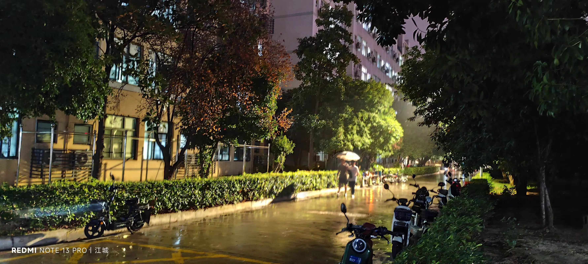

Journal · 2024-09-11
湖北省武汉市洪山区光谷体育馆
光谷体育馆
Optics Valley Gymnasium
Gymnase de la Vallée optique
Optics-Valley-Sporthalle
光谷体育馆内
Inside Optics Valley Gymnasium
À l'intérieur du gymnase de la Vallée optique
In der Optics-Valley-Sporthalle
好雨知时节，今夕乃发生。 整个军训师，都被淋湿了！
A good rain knows its season, and tonight it comes at last. The whole military-training division got soaked through!
La bonne pluie sait choisir son moment, et la voici qui tombe ce soir. Toute la division de l'instruction militaire s'est fait tremper !
Guter Regen weiß seine Zeit, heute Abend bricht er los. Die ganze Militärübungs-Division ist klatschnass geworden!
